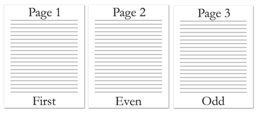

[Table of Contents] [docx version]
WordprocessingML Reference Material - Table of Contents
footerReference (Footer Reference)
This element specifies a single footer which shall be associated with the current section in the document. This footer shall be referenced via the id attribute, which specifies an explicit relationship to the appropriate Footer part in the WordprocessingML package.
If the relationship type of the relationship specified by this element is not http://schemas.openxmlformats.org/officeDocument/2006/footer, is not present, or does not have a TargetMode attribute value of Internal, then the document shall be considered non-conformant.
Within each section of a document there may be up to three different types of footers:
• First page footer
• Odd page footer
• Even page footer
The footer type specified by the current footerReference is specified via the type attribute.
If any type of footer is omitted for a given section, then the following rules shall apply.
• If no footerReference for the first page footer is specified and the titlePg element is specified, then the first page footer shall be inherited from the previous section or, if this is the first section in the document, a new blank footer shall be created. If the titlePg element is not specified, then no first page footer shall be shown, and the odd page footer shall be used in its place.
• If no footerReference for the even page footer is specified and the evenAndOddHeaders element is specified, then the even page footer shall be inherited from the previous section or, if this is the first section in the document, a new blank footer shall be created. If the evenAndOddHeaders element is not specified, then no even page footer shall be shown. and the odd page footer shall be used in its place.
• If no footerReference for the odd page footer is specified then the even page footer shall be inherited from the previous section or, if this is the first section in the document, a new blank footer shall be created.
[Example: Consider a three page document with different first, odd, and even page footers defined as follows:

This document defines three footers, each of have a relationship from the document part with a unique relationship ID, as shown in the following packaging markup:
<Relationships xmlns=http://schemas.openxmlformats.org/package/2006/relationships>
…
<Relationship Id="rId6" Type="http://schemas.openxmlformats.org/officeDocument/2006/relationships/footer" Target="footer1.xml" />
<Relationship Id="rId7" Type="http://schemas.openxmlformats.org/officeDocument/2006/relationships/footer" Target="footer2.xml" />
<Relationship Id="rId10" Type="http://schemas.openxmlformats.org/officeDocument/2006/relationships/footer" Target="footer3.xml" />
…
</Relationships>
These relationships are then referenced in the section's properties using the following WordprocessingML:
<w:sectPr>
…
<w:footerReference r:id="rId6" w:type="first" />
<w:footerReference r:id="rId7" w:type="default" />
<w:footerReference r:id="rId10" w:type="even" />
…
</w:sectPr>
The resulting section shall use the footer part with relationship id rId6 for the first page, the footer part with relationship id rId10 for all subsequent even pages, and the footer part with relationship id rId7 for all subsequent odd pages. end example]
|
Parent Elements |
|
Attributes |
Description |
|
id (Relationship to Part)
Namespace: .../officeDocument/2006/relationships |
Specifies the relationship ID to a specified part.
The specified relationship shall match the type required by the parent element: • http://schemas.openxmlformats.org/officeDocument/2006/relationships/footer for the footerReference element • http://schemas.openxmlformats.org/officeDocument/2006/relationships/header for the headerReference element • http://schemas.openxmlformats.org/officeDocument/2006/relationships/font for the embedBold, embedBoldItalic, embedItalic, or embedRegular elements • http://schemas.openxmlformats.org/officeDocument/2006/relationships/printerSettings for the printerSettings element
[Example: Consider an XML element which has the following id attribute:
<… r:id="rId10" />
The markup specifies the associated relationship part with relationship ID rId1 contains the corresponding relationship information for the parent XML element. end example]
The possible values for this attribute are defined by the ST_RelationshipId simple type (§7.8.2.1). |
|
type (Header or Footer Type) |
Specifies the type of header or footer specified by the target relationship ID. This type determines the page(s) on which the current header or footer shall be displayed.
If any section contains more than a single header or footer of each type, then the document shall be considered non-conformant.
[Example: Consider a document with the following WordprocessingML:
<w:sectPr> … <w:footerReference r:id="rId6" w:type="first" /> <w:footerReference r:id="rId7" w:type="first" /> <w:footerReference r:id="rId10" w:type="even" /> … </w:sectPr>
The resulting section has two footers of type first, and therefore is invalid. end example]
[Example: Consider a WordprocessingML section which specifies the following header reference:
<w:headerReference r:id="rId10" w:type="first" />
The resulting section shall use the specified header part for the first page. end example]
The possible values for this attribute are defined by the ST_HdrFtr simple type (§2.18.41). |
The following XML Schema fragment defines the contents of this element:
<complexType name="CT_HdrFtrRef">
<complexContent>
<extension base="CT_Rel">
<attribute name="type" type="ST_HdrFtr" use="required"/>
</extension>
</complexContent>
</complexType>